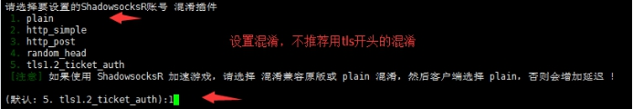

自建SS服务器教程
2020年8月16日增加多用户一键脚本,支持流量限制等，更新五合一的TCP网络加速脚本。
自建ss/ssr教程很简单，整个教程分三步：
第一步：购买VPS服务器
第二步：一键部署VPS服务器
第三步：一键加速VPS服务器 （五合一的TCP网络加速脚本）
第一步：购买VPS服务器
VPS服务器需要选择国外的，首选国际知名的vultr，速度不错、稳定且性价比高，按小时计费，能够随时开通和删除服务器，新服务器即是新ip。
vultr注册地址：https://www.vultr.com/?ref=7048874 （vps最低2.5美元/月，vultr全球17个服务器位置可选，包括日本、韩国、新加坡、洛杉矶、德国、荷兰等。支持支付宝和paypal付款。）
虽然是英文界面，但是现在的浏览器都有网页翻译功能，鼠标点击右键，选择网页翻译即可翻译成中文。
注册并邮件激活账号，充值后即可购买服务器。充值方式是支付宝或paypal，使用paypal有银行卡（包括信用卡）即可。paypal注册地址：https://www.paypal.com （paypal是国际知名的第三方支付服务商，注册一下账号，绑定银行卡即可购买国外商品）
2.5美元/月的服务器配置信息：单核 512M内存 10G SSD硬盘 带宽1G 500G流量/月 (不推荐，仅提供ipv6 ip，不推荐)
3.5美元/月的服务器配置信息：单核 512M内存 10G SSD硬盘 带宽1G 500G流量/月 (推荐)
5美元/月的服务器配置信息： 单核 1G内存 25G SSD硬盘 带宽1G 1000G流量/月 (推荐)
10美元/月的服务器配置信息： 单核 2G内存 55G SSD硬盘 带宽1G 2000G流量/月
20美元/月的服务器配置信息： 2cpu 4G内存 80G SSD硬盘 带宽1G 3000G流量/月
40美元/月的服务器配置信息： 4cpu 8G内存 160G SSD硬盘 带宽1G 4000G流量/月
vultr17个服务器位置官方测试地址：
| 服务器位置 | 官方测试ip | 下载测试文件100M | 下载测试文件1GB |
|---|---|---|---|
| 韩国汉城 | 141.164.34.61 | 100MB | 1GB |
| 新加坡 | 45.32.100.168 | 100MB | 1GB |
| 日本东京 | 108.61.201.151 | 100MB | 1GB |
| 美国硅谷 | 104.156.230.107 | 100MB | 1GB |
| 美国洛杉矶 | 108.61.219.200 | 100MB | 1GB |
| 德国法兰克福 | 108.61.210.117 | 100MB | 1GB |
| 美国纽约 | 108.61.149.182 | 100MB | 1GB |
| 美国芝加哥 | 107.191.51.12 | 100MB | 1GB |
| 美国亚特兰大 | 108.61.193.166 | 100MB | 1GB |
| 美国西雅图 | 108.61.194.105 | 100MB | 1GB |
| 美国迈阿密 | 104.156.244.232 | 100MB | 1GB |
| 美国达拉斯 | 108.61.224.175 | 100MB | 1GB |
| 加拿大多伦多 | 149.248.50.81 | 100MB | 1GB |
| 澳大利亚悉尼 | 108.61.212.117 | 100MB | 1GB |
| 荷兰阿姆斯特丹 | 108.61.198.102 | 100MB | 1GB |
| 法国巴黎 | 108.61.209.127 | 100MB | 1GB |
| 英国伦敦 | 108.61.196.101 | 100MB | 1GB |
注意：2.5美元套餐只提供ipv6 ip，一般的电脑用不了，所以建议选择3.5美元及以上的套餐。
vultr实际上是折算成小时来计费的，比如服务器是5美元1个月，那么每小时收费为5/30/24=0.0069美元 会自动从账号中扣费，只要保证账号有钱即可。如果你部署的服务器实测后速度不理想，你可以把它删掉（destroy），重新换个地区的服务器来部署，方便且实用。因为新的服务器就是新的ip，所以当ip被墙时这个方法很有用。
当ip被墙时，为了保证新开的服务器ip和原先的ip不一样，先开新服务器，开好后再删除旧服务器即可。在账号的Billing选项里可以看到账户余额。
账号充值如图：
开通服务器步骤如图：
点击图中的CentOS几个字，会弹出选项，然后选中centos6或7！ （不要选默认的centos8，脚本不支持centos8！）
开通服务器时，当出现了ip，不要立马去ping或者用xshell去连接，再等5分钟之后，有个缓冲时间。完成购买后，找到系统的密码记下来，部署服务器时需要用到。vps系统密码获取方法如下图：
删掉服务器步骤如下图：
删除服务器时，先开新的服务器后再删除旧服务器，这样可以保证新服务器的ip与旧ip不同。
第二步：部署VPS服务器
购买服务器后，需要部署一下。因为你买的是虚拟东西，而且又远在国外，我们需要一个叫Xshell的软件来远程部署。Xshell windows版下载地址：
如果你是Mac苹果电脑操作系统，更简单，无需下载xshell，系统可以直接连接VPS。直接打开Terminal终端，输入：ssh root@43.45.43.21（将45.45.43.21换成你的IP），之后输入你的密码就可以登录了（输入密码的时候屏幕上不会有显示）
如果不能用Mac自带的终端连接的话，直接网上搜“Mac连接SSH的软件”，有很多，然后通过软件来连接vps服务器就行，具体操作方式参考windows xshell。Mac成功连接vps后剩下的操作和windows一样
部署教程：
下载windows xshell软件并安装后，打开软件
选择文件，新建
随便取个名字，然后把你的服务器ip填上
连接国外ip即服务器时，软件会先后提醒你输入用户名和密码，用户名默认都是root，密码是你购买的服务器系统的密码。
如果xshell连不上服务器，没有弹出让你输入用户名和密码的输入框，表明你开到的ip是一个被墙的ip，遇到这种情况，重新开新的服务器，直到能用xshell连上为止，耐心点哦！如果同一个地区开了多台服务器还是不行的话，可以换其它地区。
连接成功后，会出现如上图所示，之后就可以复制粘贴代码部署了。
CentOS 6和7/Debian6+/Ubuntu14+ ShadowsocksR/Shadowsocks一键部署管理脚本：
脚本一(SSR)，安装完成后，快捷管理命令：bash ssr.sh
yum -y install wgetwget -N --no-check-certificate https://raw.githubusercontent.com/ToyoDAdoubi/doubi/master/ssr.sh && chmod +x ssr.sh && bash ssr.sh
脚本二（SS），脚本二没有单独做图文教程，参考脚本一的图文说明摸索下就会了。安装完成后，快捷管理命令：bash ss-go.sh
yum -y install wgetwget -N --no-check-certificate https://raw.githubusercontent.com/ToyoDAdoubiBackup/doubi/master/ss-go.sh && chmod +x ss-go.sh && bash ss-go.sh
脚本三（SSR多用户管理脚本），脚本三没有单独做图文教程，参考脚本一的图文说明摸索下就会了。安装完成后，快捷管理命令：bash ssrmu.sh 所有用户流量清零命令: bash ssrmu.sh clearall
yum -y install wgetwget -N --no-check-certificate https://raw.githubusercontent.com/ToyoDAdoubiBackup/doubi/master/ssrmu.sh && chmod +x ssrmu.sh && bash ssrmu.sh
如果提示 wget: command not found 的错误，这是你的系统精简的太干净了，wget都没有安装，所以需要安装wget。
CentOS系统安装wget命令:
yum install -y wgetDebian/Ubuntu系统安装wget命令:
apt-get install -y wget
复制上面的脚本一代码到VPS服务器里，复制代码用鼠标右键的复制（整个代码一起复制，而不是分段哦！），然后在vps里面右键粘贴进去，因为ctrl+c和ctrl+v无效。接着按回车键，脚本会自动安装，以后只需要运行这个快捷命令就可以出现下图的界面进行设置，快捷管理命令为：bash ssr.sh
如上图出现管理界面后，输入数字1来安装SSR服务端。如果输入1后不能进入下一步，那么请退出xshell，重新连接vps服务器，然后输入快捷管理命令bash ssr.sh 再尝试。
根据上图提示，依次输入自己想设置的**端口和密码 (密码建议用复杂点的字母组合，端口号为40-65535之间的数字)**，回车键用于确认
注：关于端口的设置，总的网络总端口有6万多个，理论上可以任意设置，但不要以0开头！但是有的地区需要设置特殊的端口才有效，一些特殊的端口比如80、143、443、1433、3306、3389、8080。
如上图，选择想设置的加密方式，比如10，按回车键确认
接下来是选择协议插件，如下图：
选择并确认后，会出现上图的界面，提示你是否选择兼容原版，这里的原版指的是SS客户端（SS客户端没有协议和混淆的选项），可以根据需求进行选择，演示选择y
之后进行混淆插件的设置。
注意：如果协议是origin，那么混淆也必须是plain；如果协议不是origin，那么混淆可以是任意的。有的地区需要把混淆设置成plain才好用。因为混淆不总是有效果，要看各地区的策略，有时候不混淆（plain）或者（origin和plain一起使用），让其看起来像随机数据更好。（特别注意：tls 1.2_ticket_auth容易受到干扰！请选择除tls开头以外的其它混淆！！！）

进行混淆插件的设置后，会依次提示你对设备数、单线程限速和端口总限速进行设置，默认值是不进行限制，个人使用的话，选择默认即可，即直接敲回车键。
注意：关于限制设备数，这个协议必须是非原版且不兼容原版才有效，也就是必须使用SSR协议的情况下，才有效！
之后代码就正式自动部署了，到下图所示的位置，提示你下载文件，输入：y
耐心等待一会，出现下面的界面即部署完成：
根据上图就可以看到自己设置的SSR账号信息，包括IP、端口、密码、加密方式、协议插件、混淆插件，这些信息需要填入你的SSR客户端。提醒一下：二维码链接地址由于域名失效不可用，所以部署好的账号需要自己在客户端里面手动填写信息。
如果之后想修改账号信息，直接输入快捷管理命令：bash ssr.sh 进入管理界面，选择相应的数字来进行一键修改。例如：
脚本演示结束。
此脚本是开机自动启动，部署一次即可。最后可以重启服务器确保部署生效（一般情况不重启也可以）。重启需要在命令栏里输入reboot ，输入命令后稍微等待一会服务器就会自动重启，一般重启过程需要2～5分钟，重启过程中Xshell会自动断开连接，等VPS重启好后才可以用Xshell软件进行连接。如果部署过程中卡在某个位置超过10分钟，可以用xshell软件断开，然后重新连接你的ip，再复制代码进行部署。
注意：如果创建的是centos7的服务器，需要使用命令关闭防火墙，否则无法使用代理。CentOS 7.0默认使用的是firewall作为防火墙。
查看防火墙状态命令：
firewall-cmd --state
停止firewall命令：
systemctl stop firewalld.service
禁止firewall开机启动命令：
systemctl disable firewalld.service
第三步：一键加速VPS服务器
五合一的TCP网络加速脚本，包括了BBR原版、BBR魔改版、暴力BBR魔改版、BBR plus（首选）、Lotsever(锐速)安装脚本。可用于KVMXen架构，不兼容OpenVZ（OVZ）。支持Centos 6+ / Debian 7+ / Ubuntu 14+，BBR魔改版不支持Debian 8。
wget -N --no-check-certificate "https://raw.githubusercontent.com/chiakge/Linux-NetSpeed/master/tcp.sh"chmod +x tcp.sh./tcp.sh
如果提示 wget: command not found 的错误，这是你的系统精简的太干净了，wget都没有安装，所以需要安装wget。
CentOS系统安装wget命令:
yum install -y wgetDebian/Ubuntu系统安装wget命令:
apt-get install -y wget
安装完成后，脚本管理命令为：./tcp.sh
操作方法：先安装内核，重启vps让内核生效，再启动对应的加速即可。数字1的BBR/BBR魔改内核对应数字4、5、6的BBR加速、BBR魔改加速和暴力BBR魔改版加速。数字2的BBRplus内核对应数字7的BBRplus加速。数字3的锐速加速内核对应数字8的锐速加速。
以安装暴力BBR魔改版加速为例，我们先安装对应的内核，输入数字1
内核安装完成后，输入y进行重启，重启才能让内核生效
重启完成后，输入数字6来启动暴力BBR魔改版加速
输入./tcp.sh查看最终是否启动成功。
如果想换一个加速，输入数字9进行卸载加速，然后进行同样的操作，安装内核再安装对应内核的加速即可。
注意：如果在安装内核环节出现这样一张图，注意选择NO
【SSR客户端下载】
第一次电脑系统使用SSR/SS客户端时，如果提示你需要安装NET Framework 4.0，网上搜一下这个东西，安装一下即可。NET Framework 4.0是SSR/SS的运行库，没有这个SSR/SS客户端无法正常运行。有的电脑系统可能会自带NET Framework 4.0。
Windows SSR客户端 下载地址
Windows SS客户端 下载地址
Mac SSR客户端 下载地址
Linux客户端一键安装配置使用脚本 (使用方法见注释)
安卓SSR客户端 下载地址
有了账号后，打开SSR客户端，填上信息，这里以windows版的SSR客户端为例子：
在对应的位置，填上服务器ip、服务器端口、密码、加密方式、协议和混淆，最后将浏览器的代理设置为（http）127.0.0.1和1080即可。账号的端口号就是你自己设置的，而要上网的浏览器的端口号是1080，固定的，谷歌浏览器可以通过 SwitchyOmega 插件来设置。
下载插件：switchyomega
安装插件，打开chrome，打开扩展程序，将下载的插件拖动到扩展程序页面，添加到扩展。
完成添加，会跳转到switchyomega页面，点跳过教程，然后点击proxy，如图填写，最后点击应用选项。
启动SSR客户端后，右键SSR客户端图标，选择第一个“系统代理模式”，里面有3个子选项，选择”全局模式“，之后就可以用浏览器设置好了的代理模式（http）127.0.0.1和1080翻墙，此模式下所有的网站都会走SSR代理。
常见问题及解决方法：
1、搭建的账号之前能用，突然不能用了，怎么解决？
如果ip不能ping通，xshell不能直接连接vps服务器，说明ip被墙了，需要换ip。
如果ip能ping，xshell能直接连接vps服务器，说明ip没有被墙，多半是端口被封了，优先换端口。协议和混淆推荐用origin和plain。最近RC4加密方式表现较好。
vultr开通和删除服务器非常方便，新服务器即新ip，为了保证开通的新服务器ip和旧ip不一样，先开新服务器出现ip后再删旧服务器。其它大多数vps服务商换ip都要额为收费。
2、有的地区需要把混淆参数设置成plain才好用。因为混淆不总是有效果，要看各地区的策略，有时候不混淆（plain）让其看起来像随机数据更好。
3、电脑能用但手机用不了？
如果你的手机用的是SS客户端，SS客户端没有填协议和混淆的地方，如果你部署的协议和混淆的时候没有选择兼容原版（SS版），因此手机是用不了的。这个时候你把协议弄成兼容原版、混淆也设置成兼容原版即可。或者直接将协议设置成origin且混淆设置成plain。
4、vps的服务器操作系统不要用的太高，太高可能会因为系统的防火墙问题导致搭建的SSR账号连不上。如果某个系统不好用，可以选择其它的系统来尝试。
5、vultr服务商提供的vps服务器是单向流量计算，有的vps服务商是双向流量计算，单向流量计算对于用户来说更实惠。因为我们是在vps服务器上部署SSR服务端后，再用SSR客户端翻墙，所以SSR服务端就相当于中转，比如我们看一个视频，必然会产生流量，假如消耗流量80M，那么VPS服务器会产生上传80M和下载80M流量，vultr服务商只计算单向的80M流量。如果是双向计算流量，那么会计算为160M流量。
6、如果你想把搭建的账号给多人使用，不用额外设置端口，因为一个账号就可以多人使用。一般5美元的服务器可以同时支持几十人在线使用。
如果想实现支持每个用户(端口)不同的加密方式/协议/混淆等，并且管理流量使用。
可以参考多用户配置脚本：
wget -N --no-check-certificate https://raw.githubusercontent.com/ToyoDAdoubi/doubi/master/ssrmu.sh && chmod +x ssrmu.sh && bash ssrmu.sh
安装后管理命令为：bash ssrmu.sh
注意：这个多用户配置脚本和教程内容的脚本无法共存！要想用这个脚本，把之前的脚本卸载，输入管理命令bash ssr.sh ，选择3，卸载ShadowsocksR即可卸载原脚本。
7、vultr服务器每月有流量限制，超过限制后服务器不会被停止运行，但是超出的流量会被额外收费。北美和西欧地区的服务器超出流量后，多出的部分收费为0.01美元/G。新加坡和日本东京（日本）为0.025美元/G，悉尼（澳大利亚）为0.05美元/G。把vultr服务器删掉，开通新的服务器，流量会从0开始重新计算。
8、vultr怎样才能申请退款呢？
vultr和其他的国外商家一样，都是使用工单的形式与客服联系，如果需要退款，直接在后台点击support，选择open ticket新开一个工单，选择billing question财务问题，简单的在文本框输入你的退款理由。比如：Please refund all the balance in my account。工单提交以后一般很快就可以给你确认退款，若干个工作日后就会退回你的支付方式。（全额退款结束后，账号可能会被删除）
如果英语水平不好，但是想和客服进行交流，可以用百度在线翻译，自动中文转英文和英文转中文。
9、路由器也可以配置ss/ssr账号，详见openwrt-ssr项目地址：https://github.com/ywb94/openwrt-ssr
10、如果电脑想用搭建的ss/ssr账号玩游戏，即实现类似VPN全局代理，可以用SSTAP，具体方法可以网上搜索。
11、配置bbr加速脚本，重启电脑后xshell无法连接服务器。如果你遇到这样的问题，只能把服务器删除了，重新搭建个新的，可以先配置bbr加速脚本再配置ss/ssr脚本。